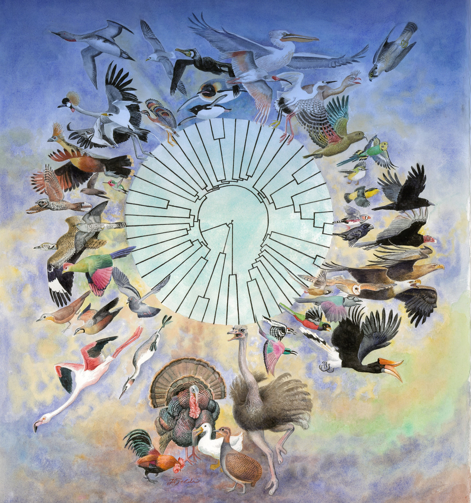

Research/
So far in my scientific carrer I have mainly worked on projects in the vein of Animal Evolutionary Genomics. To some of these I chiefly collaborated with wetlab work, while to others my contribution was on the drylab front, and yet to other projects I wore both the wetlab and the drylab hats (that was certainly the case for those projected I led). You will find below a selected list of the projects I have participated alongside with a short explaination on how I contributed to each of them. Please notice that the order used here is arbritary, and hence does not reflect the project's importances.
10K Bird Project/
 Pretty much unwittingly, I started working on this long-running project back in 2013 when my hired me as a reseach assistant during my MSc. Acting as the main responsible person for this large-scale genomic project in Copenhagen, I performed a massive amount of lab work for this study. Moreover, I also contributed to the drafting of this article and approved its final version. webpage.
Feral Pigeon Genomics/
Pretty much unwittingly, I started working on this long-running project back in 2013 when my hired me as a reseach assistant during my MSc. Acting as the main responsible person for this large-scale genomic project in Copenhagen, I performed a massive amount of lab work for this study. Moreover, I also contributed to the drafting of this article and approved its final version. webpage.
Pigeon Breeds Genomics/
Vampire Bat Genomics/